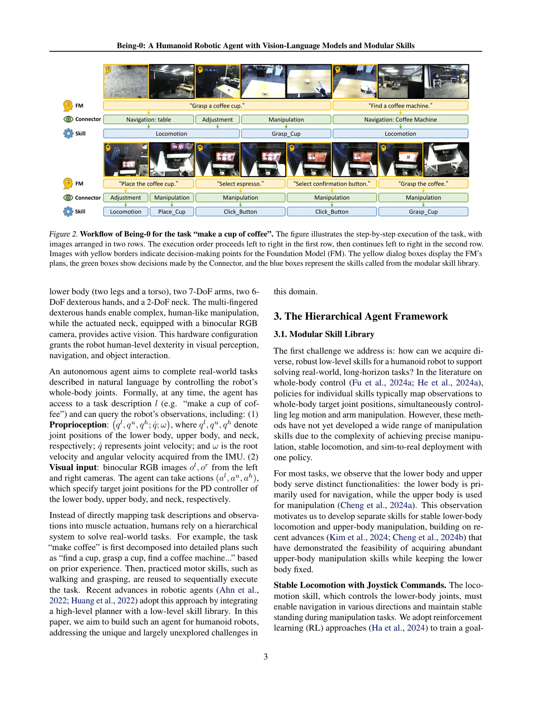
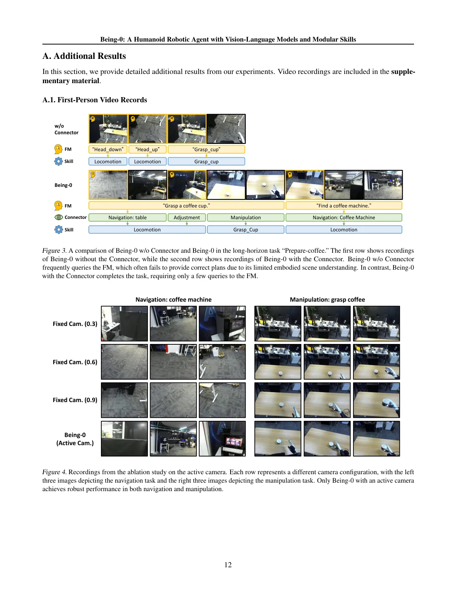
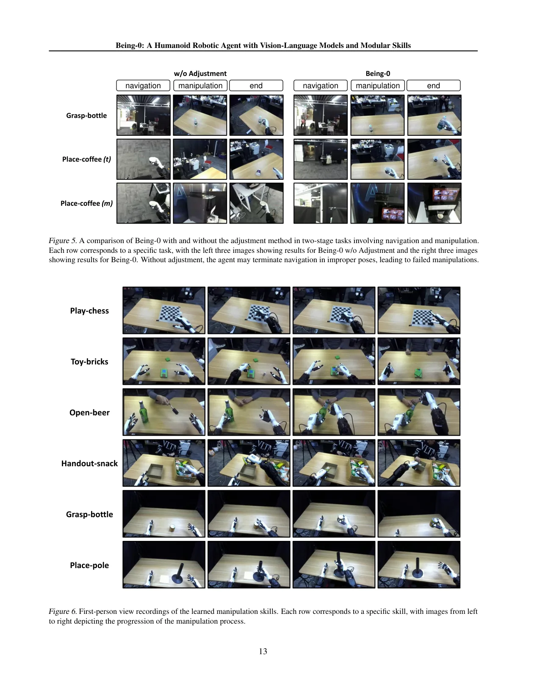

💡速记层 · 思想 / 逻辑 / 方法
默认读完就走的一层——只讲思想、逻辑、方法；效果只作验证。要核对原文/钻细节再看下面的「深读层」。
- 人形机器人已有 RL 训好的稳健locomotion skill，也有遥操+模仿学习训的manipulation skill；缺的是「怎么把它们串起来」。
- 直接用 GPT-4o 串接：① 双足不稳导致每步都需频繁纠偏，但 FM 推理太慢；② FM 的 3D 空间理解差，方向/深度判断错误；③ 导航结束停止位置可能不适合后续抓取。
- 解法：训一个轻量 VLM（VideoLLaMA2 backbone）专门处理第一人称导航图像，学会：目标检测 + 双目深度估计 + 技能预测 + 位姿对齐方向预测，以约 1s/帧推理速度闭环。
- 这个 Connector 不替代 FM，而是在 FM 给出语言计划后，实时把计划落地：把「找杯子」翻译成一系列 joystick 指令直到到位，然后触发抓取技能。
- 结果：FM 调用频率大幅降低，导航速度 4.2×，长程任务从 0% 提升到 75–90%。
去掉 Connector，Fetch-bottle / Deliver-basket / Prepare-coffee 全部 0% 完成；加上 Connector 分别达到 90% / 80% / 75%。Active camera 能让导航+抓取同时满分，固定相机角度无法两全。
想看具体数字（点开）
- Fetch-bottle: w/o Connector 0.00 → Being-0 0.90
- Deliver-basket: 0.00 → 0.80；Prepare-coffee: 0.00 → 0.75
- Make-coffee: 0.90 → 0.90；Deliver-coffee: 0.33 → 0.87
- 平均完成率 84.4%（5 任务）
- 导航效率：w/o Connector 2.3 cm/s（成功率 0/5）→ Being-0 9.6 cm/s（5/5）
- Pose Adjustment：Grasp-bottle 2/5 → 4/5；Grasp-coffee 1/5 → 4/5
- Active camera vs 最优固定角：导航+操作全部 5/5（固定角无法两全）
- 操作技能（seen objects）：Grasp-bottle 0.86，Handout-snack 0.90，Play-chess 0.90
Track A（人形移动操作）直接命中：这是人形机器人上「FM + Connector + 模块化技能」三层 agent 框架的代表性系统实现，Connector 模块的设计思路和 pose adjustment 策略可直接借鉴。Track B（足式算法）浅触及：locomotion skill 用 RL + sim-to-real 训练（joystick command 接口），但论文重心不在 locomotion 算法本身，只作为 skill library 的一个组件——如关注 locomotion 算法细节请查阅其引用的 Ha et al. 2024。本文应深读（Track A 核心样本）。
◆核心观点 · 证据
每条 = 中文论点 + 📍页/节 + 🔤逐字原文(Ctrl-F 锚点) + 🀄译文 + 💡解读。点开原文即可最短路径核对。
Unlike wheeled robots, which can precisely follow planned navigation trajectories and stop at specific positions for object manipulation, humanoid robots face inherent instability in bipedal locomotion. This instability necessitates frequent adjustments to locomotion commands for error correction. However, existing FMs, such as GPT-4o, suffer from limitations in inference efficiency and embodied scene understanding, making humanoid agents less reactive and robust during the alternating phases of navigation and manipulation in long-horizon tasks.

To address these challenges, we propose a novel Connector module, which serves as an intermediate layer between the FM and skill library in Being-0. The Connector generates real-time commands for both locomotion and manipulation skills based on the FM's language plan and visual observations. We model the Connector as a vision-language model (VLM) and train it using first-person images of indoor navigation annotated with language instructions, object labels, and bounding boxes.
The trained VLM achieves an average inference time of approximately 1 second on onboard devices across all tasks, significantly outperforming the latency of GPT-4o on cloud services.
For most tasks, we observe that the lower body and upper body serve distinct functionalities: the lower body is primarily used for navigation, while the upper body is used for manipulation. This observation motivates us to develop separate skills for stable lower-body locomotion and upper-body manipulation, building on recent advances that have demonstrated the feasibility of acquiring abundant upper-body manipulation skills while keeping the lower body fixed.
This approach ensures scalability of the skill library, as a new skill can be acquired with 50 ∼150 trajectories, requiring less than 1 hour of teleoperation.
By leveraging its enhanced understanding of relative 3D object locations, the VLM not only grounds the FM's plans into executable skills but also corrects or refines them when necessary. For example: If the FM generates a plan to "grasp a cup" but the robot is still far from the table, the VLM interprets "grasp a cup" as a long-term goal and outputs the feasible skill (e.g., "move towards(table).").
To address the challenge that navigation processes may terminate in suboptimal poses for subsequent manipulation skills, we propose a pose adjustment method using the VLM. During navigation, the VLM predicts not only the object's bounding box but also the optimal alignment direction for the robot relative to the object.

The results demonstrate a significant performance improvement when the Connector module is utilized, particularly for tasks requiring multiple steps and integration of different skills. For example, in the Fetch-bottle task, the baseline system (w/o Connector) achieves a score of 0.00, whereas the system with the Connector attains a remarkable score of 0.90.
The results indicate that Being-0 with the Connector achieves a 4.2× increase in moving speed compared to the configuration without the Connector, along with a perfect success rate of 5/5. In contrast, the agent without the Connector consistently fails to reach the distant target. This is because GPT-4o alone frequently makes errors in planning locomotion directions, leading to inefficient or incorrect navigation paths.

However, no fixed camera configuration achieves high success rates for both navigation and manipulation tasks. In comparison, Being-0 with an active camera consistently achieves perfect success rates across all tasks. These results underscore the significant advantage of an active camera, enabling the robot to dynamically adapt its field of view to meet the requirements of diverse tasks.
Furthermore, the same framework used for acquiring manipulation skills can be extended to dexterous hands equipped with tactile sensors (the Play-chess task in Table 6) and tasks requiring precise manipulation of small objects, demonstrating the scalability of the skill library to support more complex and challenging manipulation tasks.
Despite these advancements, the current system does not incorporate complex locomotion skills such as crouching, sitting, or jumping. These skills could extend the humanoid's functionality beyond flat-ground settings, enabling tasks like climbing stairs, working from seated positions, or manipulating objects at varying heights.

By deploying all modules – except for the FM on the cloud – on onboard computation devices, Being-0 achieves 4.2× efficiency in navigation compared to fully FM-based agents.
⎘开源状态
项目页面提供了 GitHub 链接，但截至当前代码尚未实际发布——仅有占位文档和 MIT license 声明。
- 代码
- 承诺开源 github.com/BeingBeyond/Being-0（MIT license；README 声明「We will release our code within this year」；截至 2026-06 尚未实际发布）
- 权重
- 未公开 Connector VLM / manipulation policy 权重均未发布
- 数据
- 未公开 导航图像数据集、操作遥操轨迹均未发布
论文正文只写「visit our project page」，项目页面（beingbeyond.github.io/Being-0）有 GitHub 链接，但 repo 当前仅含 README 和 MIT license 占位文件，实际代码尚未推送。如项目上有代码依赖需求，建议定期关注该 GitHub repo。
For further details and videos, visit our project page.
⚖批判 · 评级
① 清晰的工程 gap 定位：直接指出「FM + skill library 直连在人形机器人上失败的三个原因」，并用消融实验一一对照验证。② Connector + Pose Adjustment 是实用创新：把导航终止位姿调整纳入系统设计，是移动操作系统中容易被忽视的关键细节，消融结果（Grasp-coffee 1/5 → 4/5）有说服力。③ 完整系统评测：在真实办公环境做了多类长程任务（5 类，涵盖导航+操作+时序规划），比纯技能评测更有参考价值。④ 系统架构层次清晰（FM 云端 + Connector + 技能库板载），对搭建类似系统有直接参考价值。
① 任务规模偏小：只评测了 5 类任务，每类约 5–10 次，在单一 20×20m 办公环境，泛化性有限。② Locomotion skill 极其基础：仅支持平地 joystick 命令（直走/后退/转向/侧步），不涉及复杂地形、避障、动态障碍——locomotion 不是本文贡献重点。③ 代码 / 权重未开源：复现难度高；虽硬件（Unitree H1-2 + Inspire Hands + ZED-mini + Jetson AGX）公开，但 Connector 训练数据和权重未释出。④ Connector 训练数据来源不详：论文描述用「室内导航第一人称图像」微调，但数据量、来源、多样性未详细披露，难以评估 Connector 的泛化边界。⑤ FM（GPT-4o）依赖云服务，存在延迟和成本问题，作者坦承未来需轻量化 FM。
评级：Important 以「Connector 填鸿沟」为核心思路，是人形机器人 agent 系统的一个清晰且有实验支撑的实现范式；不是 locomotion 算法突破，而是系统集成的工程贡献。